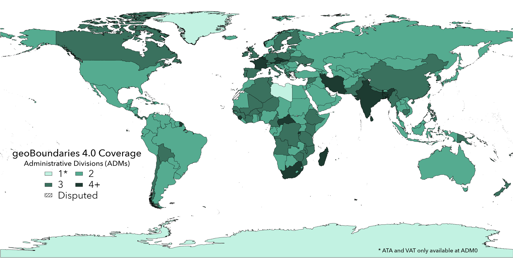
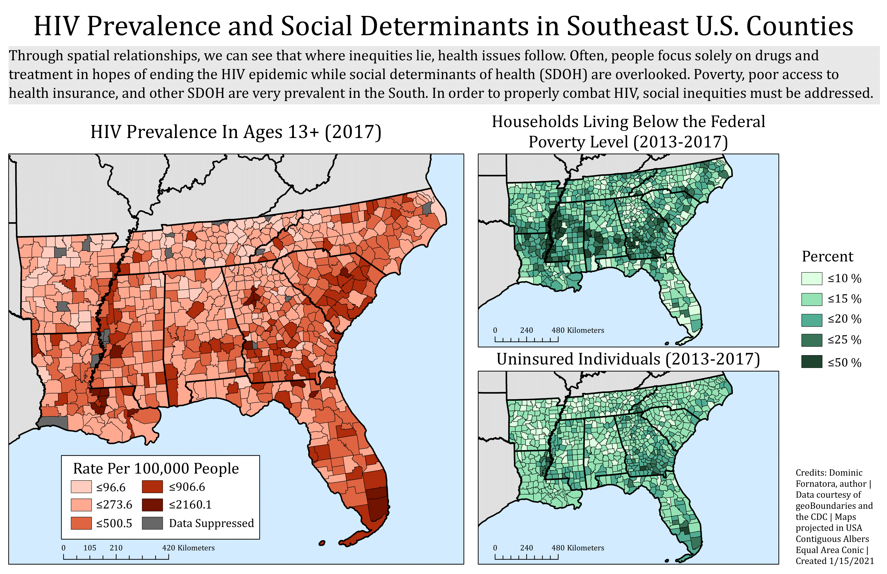

Publications
geoBoundaries - A Global Database of Political Administrative Divisions
The geoBoundaries Global Database of Political Administrative Boundaries is the world's largest open license database of boundaries for every country in the world. This database currently consists of approximately 1 million boundaries and includes all 195 UN member states. This publication is also available on Harvard Dataverse.Projects
geoBoundaries Basemap
 Done for geoBoundaries, the end result of this project is a basemap of administrative divisions (levels 0-2) from the 4.0 release data. This basemap can be found on ArcGIS Online
Done for geoBoundaries, the end result of this project is a basemap of administrative divisions (levels 0-2) from the 4.0 release data. This basemap can be found on ArcGIS OnlineDec. 2021
geoBoundaries 4.0 Data Visualization
 Done for the geoBoundaries 4.0 release to visualize the level of administrative divisions of each country available in the dataset.Sept. 2021


Independent Cartography Project
Assesses and displays the correlation between HIV prevalence and 2 social determinants of health (household living below poverty level and rate of uninsured).Jan. 20201
"Voting Equipment in North Carolina" StoryMap
 Based on research done for an external partner (Verified Voting), this deliverable shows the allocation of voting machines throughout the state of North Carolina and discusses possible consequences to voting integrity.
Based on research done for an external partner (Verified Voting), this deliverable shows the allocation of voting machines throughout the state of North Carolina and discusses possible consequences to voting integrity.
Jan. 2021
© Untitled
Design: HTML5 UP
Design: HTML5 UP